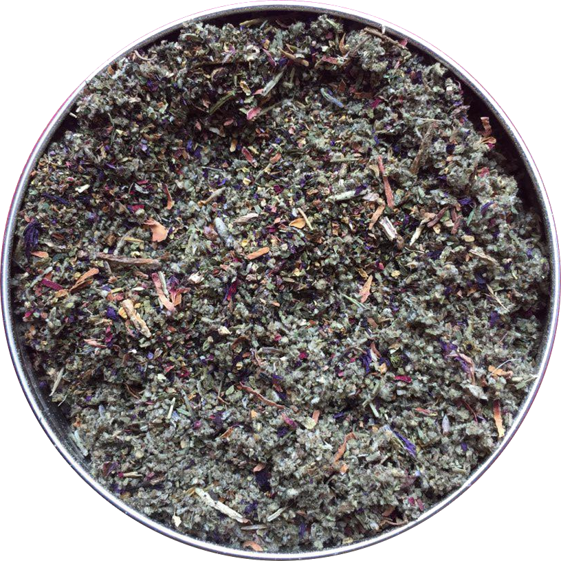
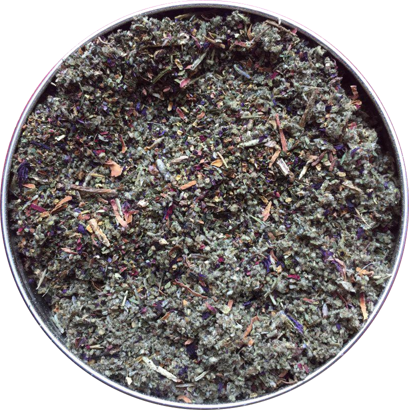

herbal alchemy


 



Traditional tobacco pouches are coated in plastic and while cellulose alternatives do exist, they are difficult to source and often need to be shipped trans-Atlantically.
Aluminum proved to be the most sustainable option - it's lightweight and durable which reduces shipping costs and easy to reuse or recycle. Packaging-free, where possible, is still the best option - find options in the webshop.
I've been making herbal smoking blends since I began studying herbalism in 2009. Over that time I've experimented with many different plants and recipes and learned what works together and in what proportions - and what doesn't. These smoking blends represent long years of attempts to find a tobacco substitute that makes smoking enjoyable without the harshness and unpleasant odor of tobacco.
The Herbal Alchemy logo is a fusion of the alchemical sign for Earth and the Astrological sign for Pluto - which was itself a symbol for Alchemy.